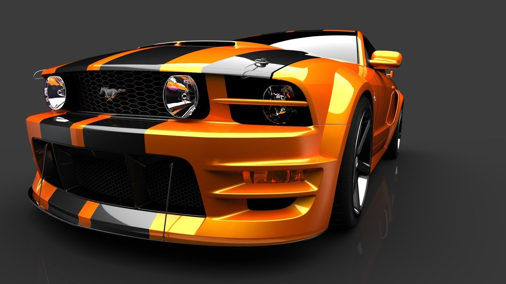

Аеродинамічні обвіси
Виготовлення й підгонка передніх сплітерів, задніх дифузорів, розширень арок та антикрил із карбону й ABS-пластику.
Київ · Студія візуального стайлінгу
Обвіси, вінілові плівки, діодна оптика й неонова підсвітка під ключ. Збираємо проєкти за 5–14 днів із гарантією 3 роки.

Чотири ключові дисципліни, які поєднуємо в єдиний візуальний проєкт.
Виготовлення й підгонка передніх сплітерів, задніх дифузорів, розширень арок та антикрил із карбону й ABS-пластику.
Повне обклеювання литим вінілом, двоколірні лівреї, матовий хром, сатин і точні смуги без стиків на видимих деталях.
Контурна підсвітка днища, колісних арок і решітки, встановлення Bi-LED лінз, ДХВ-кілець і прихована проводка зі штатним захистом.
Захист зони ризику поліуретаном, багатоетапне полірування лаку та гідрофобна кераміка для глибокого блиску кольору.
Натисніть на будь-яке авто, щоб відкрити фото у повному розмірі та переглянути список робіт.
Розрахуємо вартість матеріалів, підберемо палітру під ваш кузов і зафіксуємо дату заїзду в бокс.